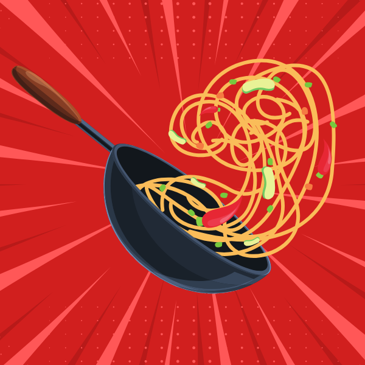

Les recettes végétariennes qui plaisent à tout le monde !
Accueil
Les Soupes
Les Snacks
Les Quiches
Les Plats
Infos Utiles
Les Plats
Une assiette équilibrée et riche en saveurs, voilà ce que j'aime. Voici ma sélection de recettes pour la cuisine de tous les jours ou pour épater vos convives.

Voici les plats que je vous propose :
Chou fleur façon bolognaise
Tagliatelles façon carbonara